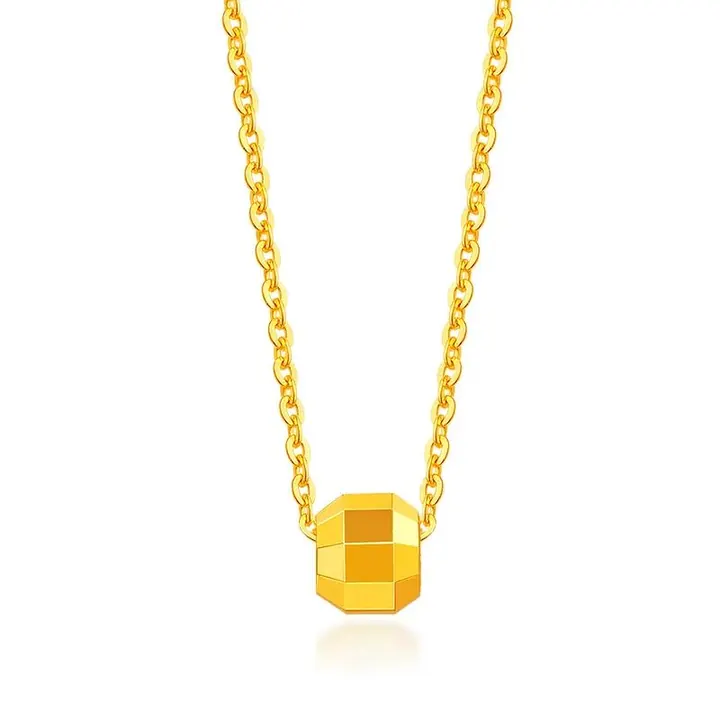

貴金屬與珠寶：金屬選擇的智慧
珠寶是「石頭與金屬的婚姻」——金屬選得好，寶石才安全、才好看。

核心定義
珠寶中的金屬選擇，是「功能＋美學＋預算」的三重考量：鑲嵌安全（爪鑲要硬金屬）、顏色搭配（金暖銀冷）、預算（金鉑貴銀親民）。頂級珠寶用鉑金與 18K，日常珠寶用 14K 與銀。
金屬的珠寶角色：鉑金與白 K 金（白色系、鑲鑽與冷色寶石）、黃金與玫瑰金（暖色系、紅寶與暖色寶石）、銀（設計與入門）、鈦鋼（運動與工業風）。金屬的「色」，決定珠寶的氣質。
特徵與分類
| 金屬 | 顏色 | 適合寶石 | 定位 |
|---|---|---|---|
| 鉑金 | 白 | 鑽石、藍寶 | 高階 |
| 18K金 | 黃/玫瑰/白 | 紅寶、彩寶 | 主流 |
| 14K | 多色 | 日常 | 耐用 |
| 銀 | 白 | 設計款 | 親民 |
鑲嵌安全的科學：爪鑲需要「硬」金屬（鉑金、18K、14K）——軟金屬（純金、銀）的爪會鬆脫、掉石。高價寶石的鑲嵌，鉑金與 18K 是安全底線。
科學原理
鑲嵌力學：爪鑲靠金屬爪的「夾持力」固定寶石——金屬硬度決定夾持耐久度。鉑金（硬度 4-4.5 實用佳）與 18K（硬度高）是鑲嵌主流；純金（太軟）與銀（較軟）需加厚設計。
顏色搭配：冷色寶石（鑽石、藍寶、綠寶）配白金屬（鉑金/白K金）——對比襯托；暖色寶石（紅寶、黃鑽）配黃金屬——和諧加分；玫瑰金襯膚色——珠寶的「色彩學」是設計的科學。
鑑定與鑑別方法
- 鑲嵌：問金屬硬度與爪鑲安全
- 顏色：配寶石色系
- 預算：金鉑銀鈦各有定位
- 過敏：問含鎳與否
- 印記：確認純度
市場行情與保養建議
趨勢：鉑金婚戒是華人市場主流（純、白、不過敏）；18K 玫瑰金受年輕世代喜愛；鈦鋼（輕、硬、便宜）在運動與工業風興起；銀飾靠設計搶市——金屬市場的多元化，是珠寶消費個性化的鏡子。
最終建議：先定「功能與預算」，再選金屬；高價寶石優先鉑金/18K（安全），日常設計可選銀與鈦鋼（個性）——金屬是珠寶的骨架，選對了，石頭才穩。
常見誤區
鑲嵌安全看「硬度」——鉑金與 18K 都夠硬，純金（貴但軟）反而不安全。安全是工程問題，不是價格問題。
設計是「比例」的藝術——過厚金屬笨重、過薄不安全。頂級珠寶的鑲嵌，是力學與美學的精密平衡。
冷知識
鉑金強度高、不鬆弛——鑽石「永恆」的承諾，需要鉑金「穩固」的保證。名貴鑽戒多用鉑金。
18K 玫瑰金＝75% 金＋銅＋銀——銅比例決定紅度。同樣是金，配方不同，氣質不同。
反直覺觀點
鉑金的白色是「柔和的冷白」——論亮度，鍍銠的白 K 金更亮。鉑金的價值在純與重，不在閃。
鈦鋼（硬度高、不易刮）比金銀更耐操——「耐用」與「貴重」是兩條軸。運動時，鈦鋼比金鍊更適合。